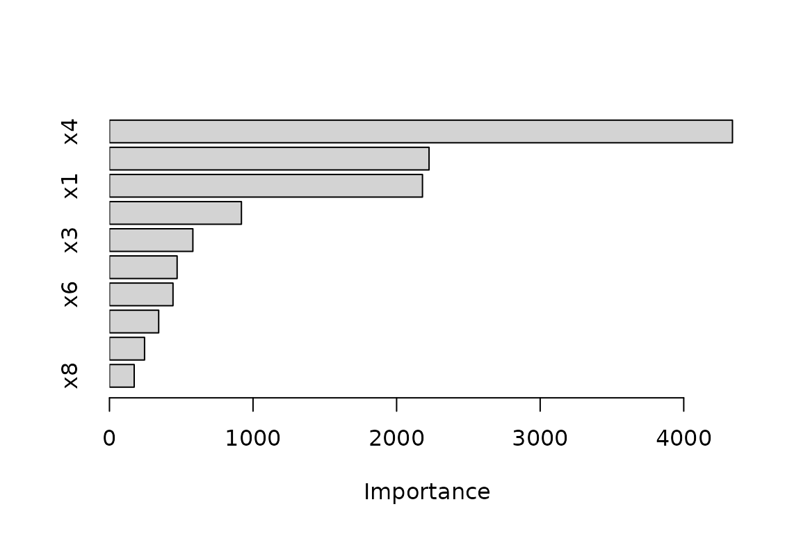
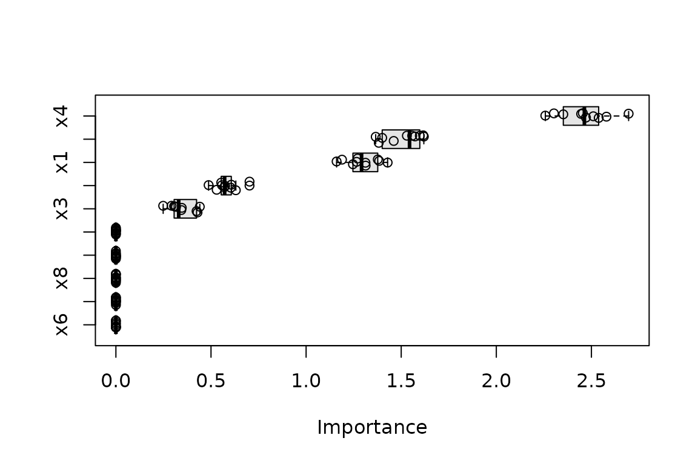
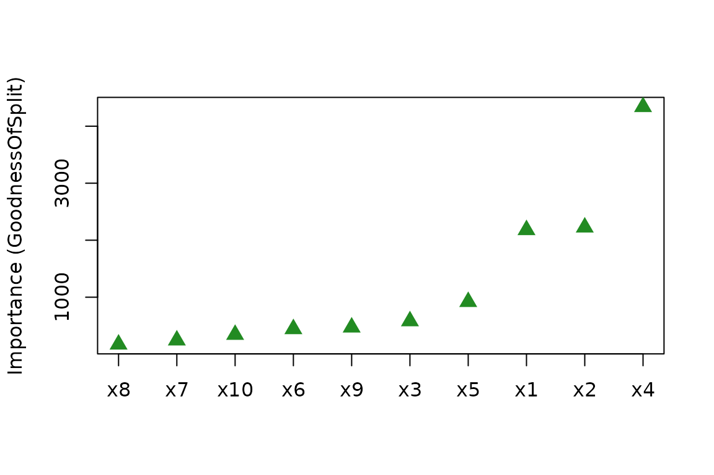

Machine learning models are often summarized by a single accuracy
metric and then put into production. Understanding which
features actually drive a model’s predictions—variable importance
(VI)—is a fundamental part of interpretable machine learning. The
vip package provides a single, consistent interface for
computing VI scores (vi()) and plotting them
(vip()) across dozens of model types, using both
model-specific and model-agnostic approaches. This
vignette is a condensed, up-to-date tour; for the full methodology,
please see (and cite) our article in The R Journal (Greenwell and Boehmke
2020).
vip supports four methods, selected via the
method argument to vi():
-
method = "model"(the default): model-specific VI scores, extracted from the fitted model itself (e.g., split-based importance in trees); see?vi_modelfor the full list of supported classes. -
method = "permute": permutation importance (Breiman 2001; Fisher et al. 2018), the drop in performance after shuffling each feature. -
method = "firm": variance-based importance computed from feature effect plots (Greenwell et al. 2018). -
method = "shap": mean absolute Shapley values (Štrumbelj and Kononenko 2014), computed via the fastshap package.
Example data
Throughout we simulate data from the Friedman 1 benchmark problem
(Friedman 1991): ten
uniform features, of which only x1–x5 truly
affect the response.
library(vip)
#>
#> Attaching package: 'vip'
#> The following object is masked from 'package:utils':
#>
#> vi
trn <- gen_friedman(500, seed = 101) # see ?vip::gen_friedman
head(trn)
#> y x1 x2 x3 x4 x5 x6
#> 1 14.47244 0.37219838 0.4055438 0.1016229 0.3224803 0.69258669 0.757968756
#> 2 14.94207 0.04382482 0.6022770 0.6022517 0.9986640 0.77643413 0.532993932
#> 3 14.11543 0.70968402 0.3619997 0.2536424 0.5484119 0.01797597 0.764821812
#> 4 10.17991 0.65769040 0.2912156 0.5419870 0.3274199 0.22965950 0.300911111
#> 5 17.86439 0.24985572 0.7937777 0.3834077 0.9474794 0.46236212 0.004866698
#> 6 18.19178 0.30005483 0.7013581 0.9919663 0.3864848 0.66623343 0.198093488
#> x7 x8 x9 x10
#> 1 0.5178156 0.5303942 0.8778652 0.7627513
#> 2 0.5094878 0.4874874 0.1176985 0.1755692
#> 3 0.7150814 0.8444552 0.3343627 0.1183739
#> 4 0.1767543 0.3457895 0.4744478 0.2830193
#> 5 0.2695334 0.1141429 0.4886461 0.3106974
#> 6 0.9235006 0.7748745 0.7356329 0.9738575Model-specific importance
When a model class provides its own importance measure,
vi() extracts it directly. For example, decision trees
measure importance through the goodness of split (Breiman et
al. 1984):
library(rpart)
tree <- rpart(y ~ ., data = trn)
vi(tree) # a data frame of class "vi"
#> Variable Importance
#> 1 x4 4339.3731
#> 2 x2 2226.0447
#> 3 x1 2180.1566
#> 4 x5 919.1159
#> 5 x3 580.9045
#> 6 x9 471.2040
#> 7 x6 442.5479
#> 8 x10 342.8346
#> 9 x7 244.3592
#> 10 x8 172.1922"vi" objects have a plot() method (drawing
with lightweight base R graphics via the tinyplot package) that
invisibly returns the plotted "vi" object;
vip() is a convenience wrapper that computes the scores and
plots them in one call:
vip(tree) # equivalent to plot(vi(tree))
Permutation importance
Permutation importance works for any model. You supply the
training data, the target, a performance metric, and a
prediction wrapper (pred_wrapper) that tells
vip how to generate predictions from your model:
pfun <- function(object, newdata) predict(object, newdata = newdata)
set.seed(102) # for reproducibility
vis <- vi(tree,
method = "permute", train = trn, target = "y", metric = "rmse",
pred_wrapper = pfun, nsim = 10 # average over 10 permutations
)
vis
#> Variable Importance StDev
#> 1 x4 2.4607753 0.13158990
#> 2 x2 1.5100570 0.09939687
#> 3 x1 1.2945714 0.08585396
#> 4 x5 0.5815745 0.05896560
#> 5 x3 0.3458391 0.06514739
#> 6 x6 0.0000000 0.00000000
#> 7 x7 0.0000000 0.00000000
#> 8 x8 0.0000000 0.00000000
#> 9 x9 0.0000000 0.00000000
#> 10 x10 0.0000000 0.00000000With nsim > 1 the raw per-permutation scores are
retained, so the variation in the scores can be displayed with boxplots
or violins; additional arguments to plot() are passed on to
tinyplot::tinyplot():
plot(vis, type = "boxplot", all_permutations = TRUE, jitter = TRUE,
fill = "grey90")
Variance-based importance (FIRM)
The FIRM approach measures the relative “flatness” of each feature’s effect, estimated via partial dependence (Friedman 2001) using the pdp package:
vi(tree, method = "firm", train = trn)
#> Variable Importance
#> 1 x4 2.7747920
#> 2 x2 1.7861122
#> 3 x1 1.5560507
#> 4 x5 0.9018752
#> 5 x3 0.4036167
#> 6 x6 0.0000000
#> 7 x7 0.0000000
#> 8 x8 0.0000000
#> 9 x9 0.0000000
#> 10 x10 0.0000000Shapley-based importance
SHAP-based importance aggregates the mean absolute Shapley value of each feature, computed with fastshap:
set.seed(103) # for reproducibility
vi(tree, method = "shap", train = subset(trn, select = -y),
pred_wrapper = pfun, nsim = 10)
#> Variable Importance
#> 1 x4 2.7516558
#> 2 x2 1.8272401
#> 3 x1 1.1810544
#> 4 x5 0.8386485
#> 5 x3 0.3018232
#> 6 x6 0.0000000
#> 7 x7 0.0000000
#> 8 x8 0.0000000
#> 9 x9 0.0000000
#> 10 x10 0.0000000Plotting options
plot() supports bar charts (type = "bar",
the default), Cleveland dot plots (type = "point"),
boxplots, and violins (the latter two require raw permutation scores;
see above). Graphical parameters (e.g., col,
pch, cex) are passed straight through to
tinyplot::tinyplot(), and include_type = TRUE
adds the importance type to the axis label:
plot(vi(tree), type = "point", horizontal = FALSE, include_type = TRUE,
col = "forestgreen", pch = 17, cex = 1.5)